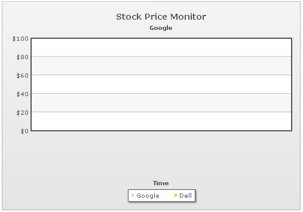
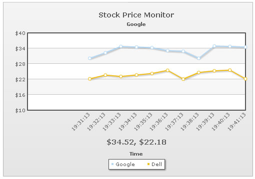
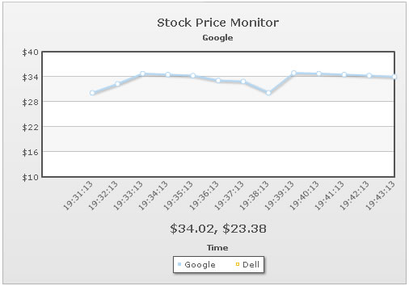

Data-streaming charts > Adding multiple datasets |
All the data-streaming charts can have any number of data-sets in them. For example, in our previous example, we're monitoring the stock price of just Google. However, we can add any number of stocks to monitor. |
| Monitoring multiple stocks |
In this example, we'll modify that example to compare 2 stocks - Google and Dell. For the sake of demo, we'll assume that the intraday price of Google stock fluctuates between $30 and $35 and that of Dell between $22 and $26. The first step in this process would be to modify our XML to add another data-set to represent Dell. This will be done as under: |
| <chart caption='Stock Price Monitor' subCaption='Google' dataStreamURL='StockPriceGoogDell.asp' refreshInterval='60' numberPrefix='$' setAdaptiveYMin='1' xAxisName='Time' showRealTimeValue='1' realTimeValuePadding='50' labelDisplay='Rotate' slantLabels='1'> <categories> </categories> <dataset seriesName='Google' showValues='0'> </dataset> <dataset seriesName='Dell' showValues='0'> </dataset> <styles> <definition> <style type='font' name='captionFont' size='14' /> </definition> <application> <apply toObject='Caption' styles='captionFont' /> <apply toObject='Realtimevalue' styles='captionFont' /> </application> </styles> </chart> |
Here, we've made the following changes:
|
| Data provider page |
| StockPriceGoogDell.asp now contains the following code: |
<%@ Language=VBScript %> 'For the sake of demo, we'll just be generating random values and returning them 'Set randomize timers on Dim lowerLimitGoog, upperLimitGoog lowerLimitGoog = 30 'Generate random values - and round them to 2 decimal places 'Get label for the data - time in format hh:mn:ss 'Now write it to output stream |
As you can see, we've modified the code to output data for both Google and Dell in a format as under: &label=19:26:56&value=30.63|22.19 Here, we've a common label, but two values separated by | (pipe character). The value 30.63 belongs to Google (as Google is the first dataset defined in XML document) and 22.19 belongs to Dell (as it's the second dataset defined in XML). The order of values here should correspond with order of <dataset> element in XML. When you now view the chart, you'll get a blank canvas as under: |
|  |
| After some time, when data is populated, it will look as under: |
|  |
| Interactive legend |
FusionWidgets data-streaming charts offer interactive legend - that allows you to show hide any dataset on the chart. That is, if you've multiple data-sets on the chart, but want to focus on just one, you can click on the data-set's series name in legend and it will hide on the chart. When clicked again, it will be visible. Shown below is a screenshot where we've hidden the dataset indicating Dell's price by clicking on the legend item. Also note that after clicking, the legend key of Dell becomes hollow: |
|  |
Even when a dataset is not visible, it will continue updating itself in the background from the real-time data. Also, all alert managers associated with the dataset will continue to work. If you do not need interactive legend, you can set it off using: <chart interactiveLegend='0' ..> |